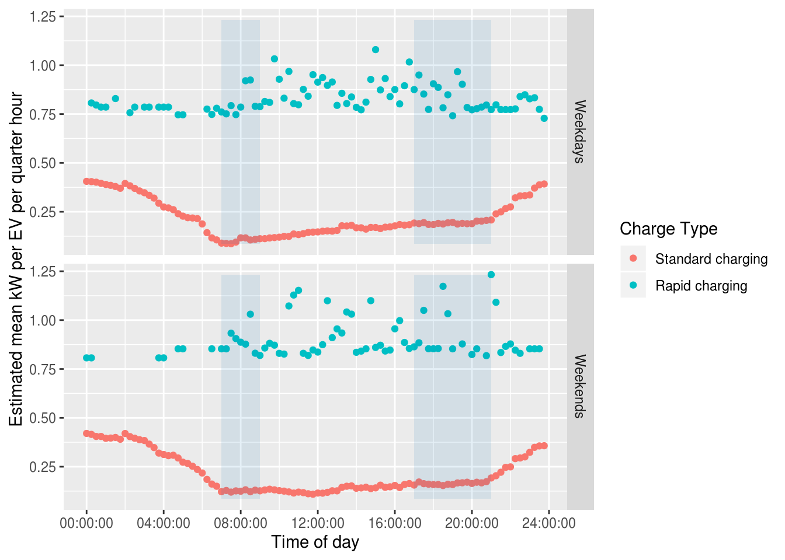
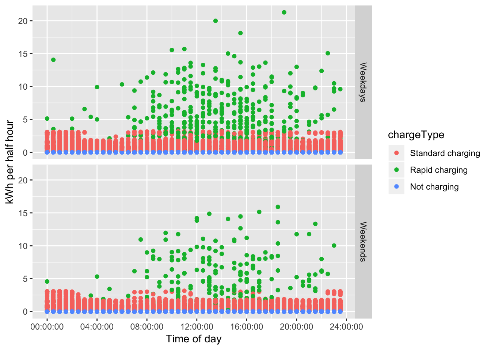
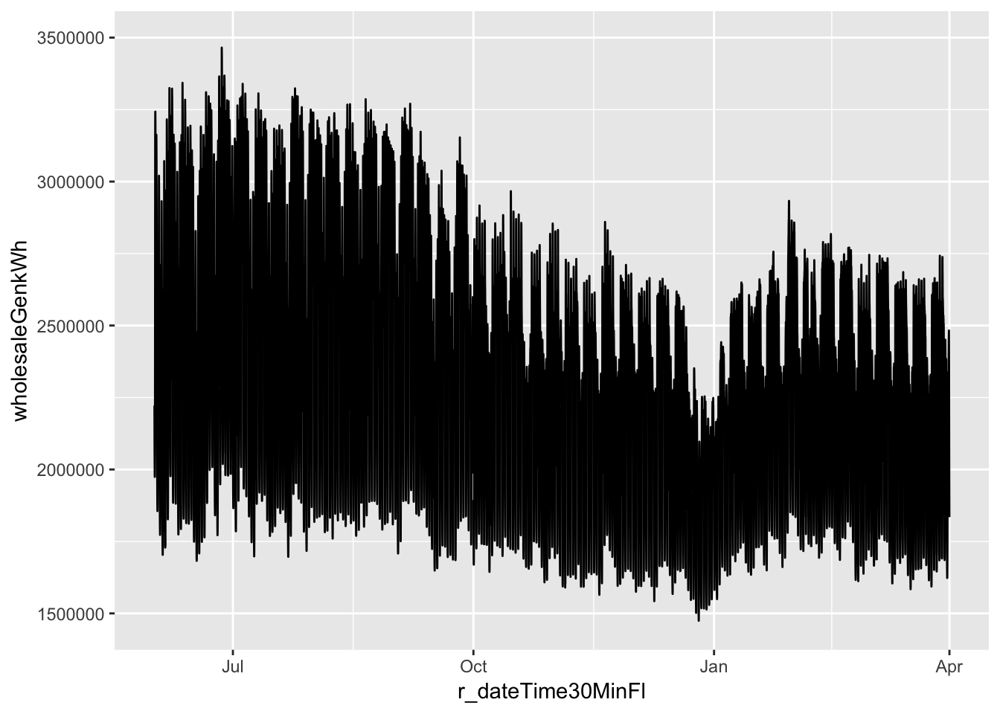
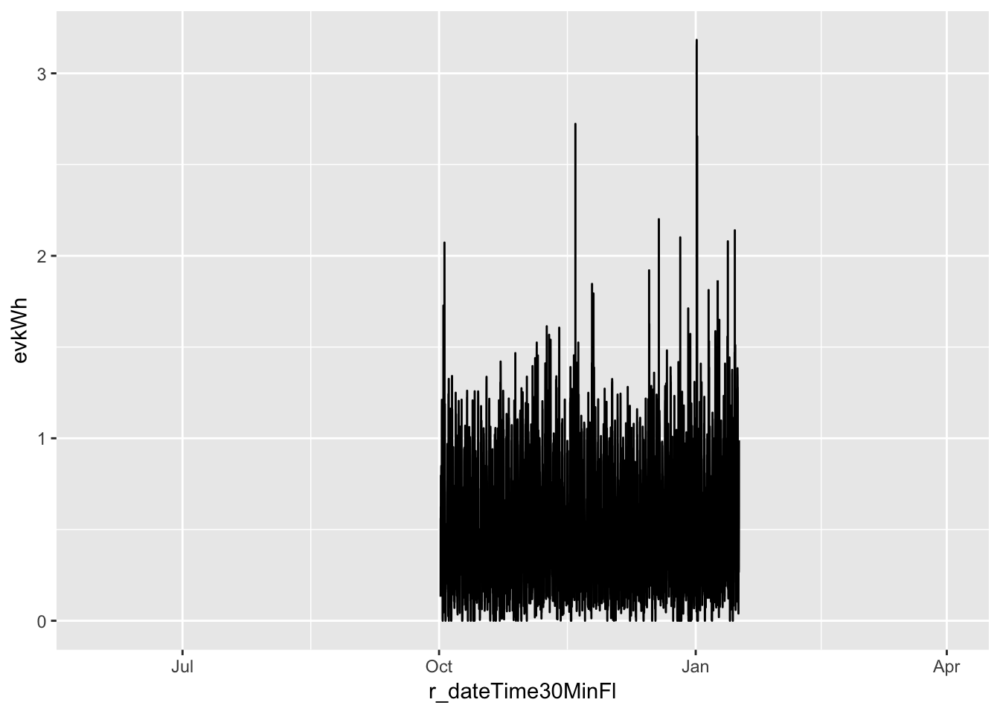
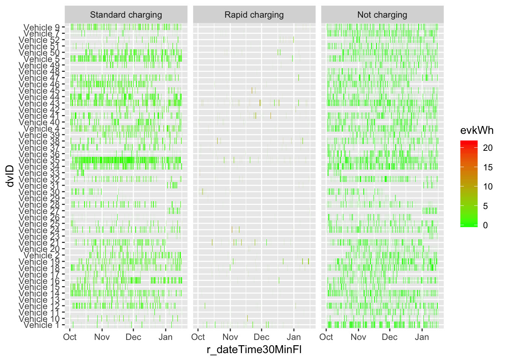

Analysis of electric vehicle usage patterns in New Zealand
Statistical report using Flip The Fleet data
Rafferty Parker and Ben Anderson (Centre for Sustainability, University of Otago, ben.anderson@otago.ac.nz); Daniel Myall (Flip The Fleet, daniel@zeno.nz)
Last run at: 2019-09-10 18:39:28
1 Health warning
The analysis reported below is work in progress. Please check with the authors before quoting or re-using (with attribution) results/plots. Reporting interim results without checking can seriously damage your health (and career :-). #YMMV.
2 About
2.1 Citation
- Parker, R., Anderson, B., and Myall, D. (2019) Analysis of electric vehicle usage patterns in New Zealand: Statistical report using Flip The Fleet data. University of Otago: Centre for Sustainability
2.2 License
This work is made available under the Creative Commons Attribution-ShareAlike 4.0 International (CC BY-SA 4.0) License.
This means you are free to:
- Share — copy and redistribute the material in any medium or format
- Adapt — remix, transform, and build upon the material for any purpose, even commercially.
Under the following terms:
- Attribution — You must give appropriate credit, provide a link to the license, and indicate if changes were made. You may do so in any reasonable manner, but not in any way that suggests the licensor endorses you or your use.
- ShareAlike — If you remix, transform, or build upon the material, you must distribute your contributions under the same license as the original.
- No additional restrictions — You may not apply legal terms or technological measures that legally restrict others from doing anything the license permits.
Notices:
- You do not have to comply with the license for elements of the material in the public domain or where your use is permitted by an applicable exception or limitation.
- No warranties are given. The license may not give you all of the permissions necessary for your intended use. For example, other rights such as publicity, privacy, or moral rights may limit how you use the material. #YMMV
For the avoidance of doubt and explanation of terms please refer to the full license notice and legal code.
3 Introduction
The New Zealand government has set a target of increasing the number of electric vehicles (EVs) in New Zealand to 64,000 by 2021 (Transpower New Zealand 2017). High penetration of EVs would cause EV recharging to contribute a substantial portion of total electricity load. A report prepared for lines companies Orion, Powerco and Unison by Concept Consulting Group entitled “Driving change - Issues and options to maximise the opportunities from large-scale electric vehicle uptake in New Zealand” predicts that if all current light private vehicles were electric, annual residential electricity consumption would increase by approximately 30%, whereas if all vehicles including trucks were electric, this would increase the total electricity consumption of New Zealand by approximately 41% (Concept Consulting 2018).
New Zealand’s total electricity demand varies throughout the day, with weekdays in particular having two distinct “peaks”; one in the morning, and one in the evening (Transpower New Zealand 2015). Providing the electricity to meet these demand peaks is a costly and inefficient process (Khan, Jack, and Stephenson 2018). Concurrent electric vehicle charging, especially in the early evening when many motorists return home (Speidel and Bräunl 2014; Langbroek, Franklin, and Susilo 2017), would have the potential to negatively impact the operation of the grid through drastically increasing peak loads (Azadfar, Sreeram, and Harries 2015; Langbroek, Franklin, and Susilo 2017), leading to an increased cost of electricity due to the requirement of expensive upgrades to the electricity grid (Stephenson et al. 2017).
The Concept Consulting report considers different methods of EV charging in its models. The assumption that most drivers would begin charging immediately after returning home is referred to as “passive” charging, while charging that is programmed (either by the driver or by an external entity) to occur during off-peak periods is referred to as “smart”. The modelling undertaken in the Concept Consulting report suggests that under a scenario whereby 57% of the current private vehicle fleet were EVs (corresponding to one EV per household), passive charging would cause an increase of peak electricity demand of approximately 3,000MW, whereas if all were charged in a “smart” fashion, there would be no increase in peak demand.
This report extends the work done by Concept Consulting, but utilises actual data collected from electric vehicles, as opposed to using models based on the current New Zealand transport sector. The intention of the report is to provide further insight into the potential effects on the New Zealand electricity grid that may occur with a dramatic increase in EVs, so that these may be planned for and mitigated. It is also inspired by the UK Department of Transport 2018 statistical report (Eyers 2018).
4 Data
Data file used in this report: EVBB_processed_all_v2.0_20190604.csv
4.1 Background
The data used has been provided by ‘Flip the Fleet’, a community organisation that hopes to increase uptake of electric vehicles in New Zealand. Flip the Fleet have been collecting data on electric vehicle usage patterns, via Exact IOT Limited’s blackbox recorder, a small electronic device that connects to the vehicle’s internal computer and sends detailed data about the battery health, power demand, charging rate, speed and other performance information to a secure database.
The subset of this data provided to the University of Otago was collected from 52 domestic electric vehicles monitored from Inf to -Inf. The data consisted of 1,882,040 1 minute interval observations of timestamped odometer readings (in km) together with measurements of charging power (kW) and battery charge state (% charged) linked by a unique anonymised vehicle identifier. The data received contained all available observations but charging was set to 0 kW if the vehicle was non-stationary (speed > 0 km/h) prior to data delivery to the University. This enabled us to automatically exclude charging through regenerative braking from the analysis.
There are a number of important limitations to this data:
- observations were only collected when the car was switched on and/or plugged in and charging. As a result no observations exist for periods when the EV is switched off and so there are large non-erroneous ‘gaps’ in the data which represent ‘no charging’ but which are not included as ‘0 power demand’ in the analyses since to do so would require imputation of a very large number of missing timestamps for each vehicle. This means we are only able to analyse power demand profiles for vehicles that were known to be charging, not for all vehicles in all time periods;
- data upload relied on mobile 3G data signal and the extent to which gaps in the data are due to data upload errors rather than the vehicle being switched off (as above) is currently unclear;
- these vehicles are driven by ‘early adopters’ who have opted to install the measuring devices in order to collect their vehicle usage data. As a result the data may not be representative of the usage patterns of current or future EV drivers (Rezvani, Jansson, and Bodin 2015; Li et al. 2017).
Even though the use of an anonymised vehicle identifier should prevent the identification of the vehicles in the sample, the fine-grained temporal nature of the data and the relatively small population of EV owners from whom the sample is drawn (Flip The Fleet members) means that the data cannot be publicly released.
4.2 Initial data cleaning
The original supplied data consisted of 1,882,040 observations for 52 EVs for the period 2018-04-05 to 2019-03-01.
| id | charge_power_kw | state_of_charge_percent | odometer_km | r_dateTime | dvID | timeChr | r_dateTimeHalfHour | charging | odometerFlag | |
|---|---|---|---|---|---|---|---|---|---|---|
| Length:1882040 | Min. : 0.00 | Min. : 0.00 | Min. :-62920 | Min. :2018-04-05 10:34:41 | Length:1882040 | Length:1882040 | Min. :2018-04-05 10:30:00 | Length:1882040 | Length:1882040 | |
| Class :character | 1st Qu.: 0.00 | 1st Qu.: 56.31 | 1st Qu.: 2166 | 1st Qu.:2018-10-12 13:27:42 | Class :character | Class1:hms | 1st Qu.:2018-10-12 13:00:00 | Class :character | Class :character | |
| Mode :character | Median : 1.30 | Median : 70.41 | Median : 5309 | Median :2018-11-25 21:21:08 | Mode :character | Class2:difftime | Median :2018-11-25 21:00:00 | Mode :character | Mode :character | |
| NA | Mean : 1.59 | Mean : 69.00 | Mean : 7790 | Mean :2018-11-22 14:22:36 | NA | Mode :numeric | Mean :2018-11-22 14:07:35 | NA | NA | |
| NA | 3rd Qu.: 1.85 | 3rd Qu.: 83.05 | 3rd Qu.: 11154 | 3rd Qu.:2019-01-13 22:10:02 | NA | NA | 3rd Qu.:2019-01-13 22:00:00 | NA | NA | |
| NA | Max. :74940.42 | Max. :1677.72 | Max. : 73607 | Max. :2019-03-01 17:42:35 | NA | NA | Max. :2019-03-01 17:30:00 | NA | NA | |
| NA | NA | NA | NA’s :1255614 | NA’s :137 | NA | NA | NA’s :137 | NA | NA |
Table 4.2 reports the raw charging data values and illustrates the presence of both 0 values and some very large values.
| Year | Month | Mean kW | Median kW | Min kW | Max kW | n Obs | n EVs |
|---|---|---|---|---|---|---|---|
| 2018 | Apr | 23.37 | 0.00 | 0 | 74940.42 | 5904 | 2 |
| 2018 | May | 19.52 | 0.00 | 0 | 12044.16 | 13191 | 7 |
| 2018 | Jun | 0.76 | 0.00 | 0 | 30.76 | 22468 | 10 |
| 2018 | Jul | 1.28 | 0.00 | 0 | 266.26 | 60776 | 13 |
| 2018 | Aug | 1.33 | 0.00 | 0 | 48.26 | 77577 | 14 |
| 2018 | Sep | 1.69 | 1.41 | 0 | 49.35 | 178884 | 37 |
| 2018 | Oct | 1.55 | 1.43 | 0 | 57.91 | 309239 | 43 |
| 2018 | Nov | 1.60 | 1.48 | 0 | 70.16 | 332960 | 44 |
| 2018 | Dec | 1.55 | 1.49 | 0 | 49.21 | 299216 | 42 |
| 2019 | Jan | 0.90 | 0.00 | 0 | 49.40 | 291236 | 42 |
| 2019 | Feb | 1.24 | 1.23 | 0 | 49.50 | 285737 | 40 |
| 2019 | Mar | 1.64 | 1.65 | 0 | 6.33 | 4715 | 32 |
Figure 4.1: Number of unique EVs observed by time of day and date
Figure 4.1 shows the number of unique EVs observed by time of day and date. As we can see the early part of the sample is sparse and indeed the maximum number of EVs observed in any 15 minute time period was only 21 out of a possible total of 52. While this will not affect some analyses, it is likely to introduce error and small sample effects to summary analyses (e.g. means) or month by month analyses. In some sections the analysis will therefore be restricted to the data from September to January.
Figure 4.2 plots the number of observations per half hour by EV for the raw data. It appears to suggest that there is a large gap in the charging observations in February. This is not easily explainable as non-charging (i.e. driving) observations continue through this period.
Figure 4.2: Observed charging (raw data)
Figure 4.3 shows the unique number of EVs recorded on each day by whether or not they were charging and reflects the period over which Flip The Fleet installed the data collection boxes. It also shows the unexplained drop in charging observations during February.
Figure 4.3: Number of unique EVs observed by time of day and date
Finally, 4.3 shows that a small number of EVs have very few observations, in some cases not extending beyond 1 day (shown as 0 days observed).
| id | nObs | startTime | endTime | meankWCharging | maxkWCharging | nDaysObserved |
|---|---|---|---|---|---|---|
| 0cc746a3f5ae75ee94068a8354b6be08 | 3 | 2018-09-09 10:46:30 | 2018-09-09 10:48:42 | 0.000 | 0.000 | 0 days |
| 01583b8a5f0344cc4aa3b3939a27af2a | 4 | 2018-09-09 10:34:12 | 2018-09-09 10:36:25 | 0.000 | 0.000 | 0 days |
| 4a6bb6e7ffc28d9d8eda7b4c6377a027 | 19 | 2018-09-08 08:48:38 | 2018-09-09 10:27:50 | 4.225 | 27.557 | 1 days |
| 126c8759ec95ba40070b16a11fe0e587 | 258 | 2018-09-30 11:54:18 | 2018-09-30 19:24:05 | 1.587 | 1.960 | 1 days |
| 6e3293c77f562262ed6608db1b596d36 | 4315 | 2018-05-15 14:48:15 | 2018-12-06 13:25:56 | 0.287 | 47.246 | 205 days |
| 781f06f7d7bb80b74c399326be0d3e28 | 5469 | 2018-09-28 11:25:58 | 2018-10-15 16:21:57 | 2.369 | 47.687 | 18 days |
Taking all of the above into account we have therefore discarded:
- the 5 vehicles that had no recorded charging observations (this also discarded those with very few observations - see Table 4.3);
- 45 instances of charging power greater than 120kW. These were considered anomalies and as these exceed the capacity of the highest charging stations currently available in New Zealand (Concept Consulting 2018);
- 61 instances of battery state of charge observations of greater than 100%;
- all observations collected before 2018-10-01 and after 2019-01-16 in order to focus analysis on the periods with most EVs present in the data and avoid periods of apparently systematic missing data. It is hoped that this will reduce the extent to which the charging behaviour of a small number of EV owners will skew the aggregated results.
This left 48 remaining vehicles, and 1,074,730 observations as shown in Table 4.4.
| Year | Month | Mean kW | Median kW | Min kW | Max kW | n Obs | n EVs |
|---|---|---|---|---|---|---|---|
| 2018 | Oct | 1.55 | 1.43 | 0 | 57.91 | 304777 | 43 |
| 2018 | Nov | 1.60 | 1.48 | 0 | 70.16 | 332960 | 44 |
| 2018 | Dec | 1.55 | 1.49 | 0 | 49.21 | 299216 | 42 |
| 2019 | Jan | 1.75 | 1.53 | 0 | 49.40 | 137777 | 42 |
4.3 Definitions and preparation
4.3.1 Charge type
Charging data has been broadly separated into two separate categories, ‘Standard’ and ‘Rapid’. Standard charging is defined to be when the charger is reading less than 7kW - this is considered the upper limit of ordinary home charging without an expensive wiring upgrade (Concept Consulting 2018). Rapid charging is defined as all charging equal to or greater than 7kW, and would likely occur at designated and purpose-built public charging stations.
It should be noted that this method is not always accurate since we can identify apparent sequences of charging which start at > 7kW and decline to < 7kW over a relatively short period or vice versa (see Section 8.3.1). In this circumstance the first observation will be correctly classified as ‘Rapid’ but the lower observations, which we assume are lower power ‘top-ups’ at the end of a rapid charge will be incorrectly classified as ‘Standard’. As an example, we know that there are 85 sequences of charging events (out of a total of 13798) where the first and last charge types do not match.
This is clarified and corrected in Section 4.3.2 for charging begin/end pairs (and thus in the results that use this data) but has yet to be resolved in other sections which use all charging observations. As a result we may currently be under-estimating the number of rapid charge observations and over-estimating the mean power demand of standard charges where we conduct analysis using all charging observations.
Figure ?? shows the distribution of observed charging kW demand by inferred charge type without correcting for potential mis-classifications. Setting aside the small number of potential misclassifications noted above, the plot confirms the validity of our definition and shows that rapid charges were relatively rare in the dataset. rapid charges have two distinct power demand ‘peaks’ at ~22kW and ~45kW while the far more common standard charging was mostly concentrated around 1.8kW and 3kW, with a smaller concentration around 6kW.
| chargeType | Mean kW | Median kW | Min kW | Max kW |
|---|---|---|---|---|
| Standard charging | 2.09 | 1.76 | 0.50 | 7.00 |
| Rapid charging | 30.63 | 30.95 | 7.02 | 70.16 |
| Not charging | 0.00 | 0.00 | 0.00 | 0.00 |
Figure 4.4: Observed power demand distribution by charge type where charging observed
Finally, we test the temporal distribution of observed charging by aggregating to half-hours. Figure 4.5 gives some indication of the relative prevalence of each charging type.
Figure 4.5: Observed charging
4.3.2 Charge sequences
In order to determine charging durations, we have identified and extracted observations which are the start and end of charging sequences. This is done using the following logic:
- rows were coded as “charging begins” if the charging power was greater than zero and the previous and following row’s charging power were (respectively) equal to zero and greater than zero;
- rows were coded as “charge ends” if the charging power was greater than zero and the previous and following row’s charging power were (respectively) greater than zero and equal to zero;
- rows were coded as “charge in a sequence” if charging power > 0 and the observations either side were also > 0
- rows were coded as “single charge events” if charging power > 0 but the observations either side were 0.
| Standard charging | Rapid charging | Not charging | NA | Sum | |
|---|---|---|---|---|---|
| Charging in a seq | 699127 | 6128 | 0 | 0 | 705255 |
| First charge obs in a seq | 6518 | 382 | 0 | 0 | 6900 |
| Last charge in a seq | 6573 | 325 | 0 | 0 | 6898 |
| Not charging (0 kW) | 0 | 0 | 350923 | 0 | 350923 |
| Single charge observation | 4649 | 103 | 0 | 0 | 4752 |
| NA | 1 | 1 | 0 | 0 | 2 |
| Sum | 716868 | 6939 | 350923 | 0 | 1074730 |
Table 4.6 shows the results of this coding for all clean observations within the selected dates (2018-10-01 - 2019-01-16). As we can see most observations were coded using this scheme and we obtained 6,900 instances of charging starting, and 6,898 instances of charge ending. The additional -2 instances of charge ending than there are of the charge beginning may be due to the first (or last) instance of data collection occurring during mid-charge for some vehicles.
An alternative classification method, tested in Section 8.3.1, added a 120 second maximim threshold to sequences of observations but was not used as it failed to identify sparse sequences of charging events.
Comparison of the begining and end charge types showed, as suspected, that a number of pairs had mis-matching charge-types (see Table 4.7). In all cases charge type was set to ‘Rapid’ if either of the start or end observations was classified as ‘Rapid’. However this correction has only been made with the extracted pairs data and how not yet been applied to the full ‘all observations’ data.
| Standard charging | Rapid charging | Not charging | Sum | |
|---|---|---|---|---|
| Error: first = Rapid, last = Standard | 0 | 71 | 0 | 71 |
| Error: first = Standard, last = Rapid | 14 | 0 | 0 | 14 |
| OK: first = Rapid, last = Rapid | 0 | 311 | 0 | 311 |
| OK: first = Standard, last = Standard | 6504 | 0 | 0 | 6504 |
| Sum | 6518 | 382 | 0 | 6900 |
The charge duration was then calculated as being the time duration between each pair of ‘first in charge sequence’ and ‘last in charge sequence’ observations.
Figure 4.6 shows the overall distribution of all charging sequences using the corrected charge type. Clearly there are very small and a few very large values for both charging types.
Figure 4.6: Duration of charging sequences by corrected charge type
Table 4.8 shows the overall distributions and indicates the extent to which the means are skewed by the very small and a few very large values shown in Figure 4.6.
| chargeTypeCorrected | N | mean | median | min | max |
|---|---|---|---|---|---|
| Standard charging | 6500 | 98.27 mins | 3.38 | 0.27 mins | 1616.72 mins |
| Rapid charging | 395 | 25.06 mins | 14.27 | 0.02 mins | 922.03 mins |
Table 4.9 shows the longest duration ‘standard’ charge events while Table 4.10 shows the longest duration ‘Rapid’ charge events.
| dvID | startTime | day_of_week | chargeType | chargeTypeCorrected | pairDuration | duration_hours |
|---|---|---|---|---|---|---|
| Vehicle 39 | 2019-01-04 10:03:05 | Fri | Standard charging | Standard charging | 1616.72 mins | 26.95 |
| Vehicle 28 | 2018-10-08 13:54:06 | Mon | Standard charging | Standard charging | 1442.30 mins | 24.04 |
| Vehicle 39 | 2019-01-01 15:39:53 | Tue | Standard charging | Standard charging | 1380.53 mins | 23.01 |
| Vehicle 34 | 2018-12-08 22:28:58 | Sat | Standard charging | Standard charging | 1353.40 mins | 22.56 |
| Vehicle 39 | 2018-12-21 17:40:33 | Fri | Standard charging | Standard charging | 1341.80 mins | 22.36 |
| Vehicle 39 | 2018-11-25 10:44:13 | Sun | Standard charging | Standard charging | 1324.10 mins | 22.07 |
| Vehicle 35 | 2019-01-05 16:58:43 | Sat | Standard charging | Standard charging | 1315.95 mins | 21.93 |
| Vehicle 9 | 2019-01-01 03:35:49 | Tue | Standard charging | Standard charging | 1266.52 mins | 21.11 |
| Vehicle 39 | 2018-12-06 16:54:34 | Thu | Standard charging | Standard charging | 1264.10 mins | 21.07 |
| Vehicle 18 | 2018-11-22 13:37:53 | Thu | Standard charging | Standard charging | 1228.23 mins | 20.47 |
| dvID | startTime | day_of_week | chargeType | chargeTypeCorrected | pairDuration | duration_hours |
|---|---|---|---|---|---|---|
| Vehicle 43 | 2019-01-12 09:51:43 | Sat | Rapid charging | Rapid charging | 922.03 mins | 15.37 |
| Vehicle 36 | 2018-12-05 17:10:19 | Wed | Standard charging | Rapid charging | 865.70 mins | 14.43 |
| Vehicle 12 | 2018-11-29 21:08:02 | Thu | Rapid charging | Rapid charging | 582.53 mins | 9.71 |
| Vehicle 40 | 2018-11-15 12:37:03 | Thu | Rapid charging | Rapid charging | 398.27 mins | 6.64 |
| Vehicle 40 | 2019-01-15 10:39:13 | Tue | Rapid charging | Rapid charging | 346.25 mins | 5.77 |
| Vehicle 43 | 2018-12-11 15:39:24 | Tue | Rapid charging | Rapid charging | 227.85 mins | 3.80 |
| Vehicle 1 | 2018-12-06 07:20:46 | Thu | Rapid charging | Rapid charging | 173.58 mins | 2.89 |
| Vehicle 49 | 2018-12-11 12:40:40 | Tue | Rapid charging | Rapid charging | 116.37 mins | 1.94 |
| Vehicle 21 | 2018-12-09 20:04:03 | Sun | Rapid charging | Rapid charging | 90.57 mins | 1.51 |
| Vehicle 44 | 2018-11-19 16:02:37 | Mon | Standard charging | Rapid charging | 80.27 mins | 1.34 |
Figure 4.7 shows the distribution of very short charging sequences. As we can see these appear to be generally less than 8 minutes in length for Standard Charges.
Figure 4.7: Duration of charging sequences < 15 minutes
Manual inspection of the data showed that these short-duration ‘standard’ charging events generally occurred near the end of a longer-duration charging sequence. It appeared that once the vehicle had reached its highest state of charge, charging would intermittently stop and start again. This is probably due to the behaviour of the charger once the battery was almost full.
Table 4.11 repeats the same descriptive statistics reported in Table 4.8 but for all sequences of greater than 8 minute duration. We can now see that the mean and median durations for both Standard and Rapid Charge sequences are closer.
| chargeTypeCorrected | N | mean | median | min | max |
|---|---|---|---|---|---|
| Standard charging | 2594 | 243.01 mins | 207.12 | 8.03 mins | 1616.72 mins |
| Rapid charging | 296 | 32.18 mins | 17.74 | 8.12 mins | 922.03 mins |
In addition to the many ‘short’ charging duration values, a small number of unreasonably long charging durations (longer than 14 hours for rapid charging - see Table 4.10) were calculated. As these exceeded the expected charge durations of even the highest capacity vehicles currently available, they were also assumed to be anomalies. The analyses in Section 5.2 below was therefore made with the following charge events excluded from the data:
- duration < 8 minutes for standard charging (3906 observations - noting that some of these may be short low power ‘Rapid charge’ events as discussed in Section 4.3.1)
- duration > 840 minutes (14 hours) for rapid charging (2 observations)
Figure 4.8 shows the distribution of charging sequences with the excessively long or short events removed. These charging durations appear more reasonable when considering standard battery capacities and available charge power.
Figure 4.8: Duration of charging sequences with unreasonably long or short values removed
| chargeTypeCorrected | N | mean | median | min | max |
|---|---|---|---|---|---|
| Standard charging | 2594 | 243.01 mins | 207.12 | 8.03 mins | 1616.72 mins |
| Rapid charging | 393 | 20.64 mins | 14.25 | 0.02 mins | 582.53 mins |
5 Results
5.1 Time of charging
It has been suggested that EV charging is more likely to occur in the early evening when drivers return from daily commutes or school pick-ups (Langbroek, Franklin, and Susilo 2017).
Figure 5.1 plots the distribution of each charge type over time of day and confirms the very low incidence of rapid charging. It also supports the suggestion that standard charging (at home) does not appear to begin until later in the evening.
Figure 5.1: Density plot of charging start times during weekdays
Figure 5.2 extends this analysis by showing charging and non-charging observations at different times of day by weekday vs weekends using a density plot to show relative distributions over time within each type. The plot clearly shows non-charging during day-time use and also shows a bi-model distribution for rapid charging (non-corrected categorisation). Standard charging also shows a bi-modal distribution with a peak around 22:00 on weekdays and another at 01:00 presumably indicating the use of timed or ‘smart’ charging or trickle events.
Figure 5.2: Density plot of charging start times during weekdays
In general, these results indicate that the greatest frequency of standard charging events occurs between 20:00 and 08:00, with very low occurrences of charging during morning and evening grid peaks. Rapid charging on the other hand is a day-time activity on both weekdays and weekends.
To make the patterns of ‘initial charging’ clearer, we use just the ‘first’ charge observation in a pair (see above) and also exclude automatic battery ‘top-ups’ (refer to Section 5.3) by filtering out any data where a charging observation begins while the state of charge is greater than 90%. Having done so, Figure 5.3 shows the distribution of the start of ‘charge sequences’ and shows that the number of charging event starts increases steadily through the day before an apparent brief lull between 19:00 and 21:00 and then increases substantially thereafter.
Figure 5.3: Charging start times where state of charge < 90%
Figure 5.4 uses a density plot to represent the proportion of charging sequences that start at different times of the day on weekdays vs weekends for standard and rapid charging (corrected classification).
Figure 5.4: Density plot of charging start times where state of charge < 90%
As we can see, standard charging sequences (as opposed to single observations) have a noticeably different profile to charging patterns for rapid charges. It suggests that the largest number of standard charging events start between 20:00 and 22:00 and run overnight, and perhaps use the more powerful public charge points to top up during the day. However the plot also show a substantial proportion of charging events start earlier in the day, including during the NZ peak demand periods of 07:00 - 09:00 and 17:00 - 21:00.
Standard charging events were most likely to begin around 10pm during both weekdays and weekends. As it seems unlikely that this is due to vehicle drivers returning home at this hour, this effect may be due to drivers setting the charger on a timer to take advantage of cheaper “off-peak” electricity times, which frequently begin around 10pm.
Rapid charging events were most likely to begin at 11:30am on weekdays and 1pm during weekends.
The lack of data from EVs which are neither charging nor being driven means that it is impossible to directly calculate the proportion of the sample who were charging at a given time. Instead we can estimate the proportion of EVs which were charging by:
- counting the number of EVs (nEVs) that were observed to charge for each charge type in each quarter hour of every day;
- counting the total number of EVs (totalDayEVS) that were recorded charging or not charging (i.e. in use) on that day. Since we would receive no data from EVs that were not in use and not charged on a given day, this is the best estimate we can make of the EV ‘live population’ on a given day;
- calculating the % charging for each charge type for each quarter hour of every day = nEVs/totalDayEVS;
- calculating the mean of this value across all weekdays and weekend days for each charge type.
Figure 5.5: Percent of vehicles charging in a given 15 minute period
These results are reported in Figure 5.5 which shows the estimated mean % of EVs which were charging in each quarter-hour of the day by charge type. As we would expect the pattern of charging replicates that found in Figure 5.1 and indicates the relative rarity of rapid charging.
5.2 Charging duration
This section analyses the duration of observed charging events to understand when longer charging sequences are likely to occur. Table 5.1 shows the mean durations for all all charging events by event start time for standard charging durations greater than 8 minutes (see Section 4.3.2) and all rapid charging events.
| chargeTypeCorrected | mean | median | min | max | sd |
|---|---|---|---|---|---|
| Standard charging | 243.01 mins | 207.12 mins | 8.03 mins | 1616.72 mins | 190.61 |
| Rapid charging | 20.64 mins | 14.25 mins | 0.02 mins | 582.53 mins | 42.34 |
| qHour | chargeTypeCorrected | weekdays | meanDuration | nEVs |
|---|---|---|---|---|
| 10:30:00 | Standard charging | Weekends | 1324.10 mins | 1 |
| 02:30:00 | Standard charging | Weekends | 528.46 mins | 4 |
Figure 5.6 plots the mean duration by time of day and weekday vs weekend and charge type. As before we use transparency to indicate the number of unique EVs contributing to the mean values and we have removed a small number of very large duration outliers (mean duration > 540 minutes or 9 hours) which appears to be based on just 1 or 2 EVs (see Table @ref:(tab:makeDurationTimeMean)).
As we would expect, the plot shows that for standard charging mean ‘forward’ duration generally decreases from midnight, presumably as batteries are becoming fully charged through to 06:00 and then increases as the time of starting to charge increases through the day before trending downwards before midnight. Again, this confirms that charge events starting in or just after the evening peak demand period on both weekdays and weekends are likely to be longer, possibly reflecting the lower state of charge at this time of day (following use).
Duration of rapid charge events by start time appear to be more randomly distributed, although very few events were recorded between midnight and 7am. This, along with the comparatively low number of recorded rapid charge events indicated in Fig. ?? suggests that drivers utilize rapid charging only “as necessary” to ensure they have enough battery capacity to complete their journey or when ‘at work’ or conducting some other mobility related task such as shopping.
Figure 5.6: Mean duration (within quarter hours) by time of charging start
5.3 State of charge
The state of charge is the percentage of energy still available to be used in the battery. In future, electric vehicles may be able to discharge any remaining battery charge as electricity into the grid, a process known as vehicle to grid (V2G) energy transfer. This may allow electric vehicles to have a net beneficial effect on the grid, reducing the evening peaks by providing electricity to the home during this period, and then recharging later in the evening or early the next morning when peak demand has diminished.
This section provides an indication of the state of charge of electric vehicles upon charging, so that the potential of V2G technology can be assessed.
Figure 5.7: Value of state of charge (first charging observation)
As can be seen in Figure 5.7, using the cleaned complete observations data, the state of charge for the majority of standard charge observations is above 90%. This is most likely due to the manner in which the charger regularly turns off and on again near the end of the charging cycle as described in Section 4.2.
Figure 5.8 shows the state of charge values for all charging events but with state of charge greater than 90% removed from the data for clarity. The figure indicates that many vehicles begin charging despite having greater than 50% charge remaining. This has clear implications for battery life management since continually top-up charging is known to substantially shorten the lifetime of EV batteries (XX ref needed XX). However it also indicates the potential to use the charge in the battery to feed into the grid, especially in the residential context.
| Charge Type | Mean SoC % | Median SoC % | n Obs | n EVs |
|---|---|---|---|---|
| Standard charging | 50.48 | 50.52 | 2814 | 47 |
| Rapid charging | 44.06 | 42.87 | 382 | 41 |
Figure 5.8: Value of state of charge when charging begins (values > 90% removed)
Figure 5.9 repeats this analysis but uses the cleaned and corrected inferred start/end of charging sequence data instead of all charging observations. Figure ?? shows very similar distributions to the previous ‘all-observations’ plot (Figure 5.7) and confirms that sequences of standard charging in particular most frequently start with battery state of charge over 50%.
| Charge Type (corrected) | Mean SoC % | Median SoC % | n Obs | n EVs |
|---|---|---|---|---|
| Standard charging | 48.62 | 48.76 | 2453 | 47 |
| Rapid charging | 44.10 | 42.88 | 393 | 40 |
Figure 5.9: Value of state of charge at beginning of charging sequence (chargeType corrected, values > 90% removed)
Statistics:
- 1 of the 380 rapid charging sequences with intial SoC < 90% started with less than 5% charge;
- 133 of 380 (35%) rapid charging sequences with intial SoC < 90% started with greater than 50% charge;
- 1166 of 2466 (47.28%) standard charging sequences with intial SoC < 90% started with greater than 50% charge;
Figure 5.10 shows the state of charge at the end of a charging sequence using the cleaned and corrected inferred start/end of charging sequence data, We can now see that the majority of standard charge sequences end with close to 100% charge but most rapid charge sequences end with around 75-80% charge.
| Charge Type (corrected) | Mean SoC % | Median SoC % | n Obs | n EVs |
|---|---|---|---|---|
| Standard charging | 90.71 | 97.30 | 6573 | 47 |
| Rapid charging | 72.49 | 75.04 | 325 | 39 |
Figure 5.10: Value of state of charge at end of charging sequence (chargeType corrected, all values
Figure 5.11 shows the difference in charge gain for all charge sequences where the starting charge was less than 90% (as above).
| Charge Type (corrected) | Mean SoC gain % | Median SoC gain % | n Obs | n EVs |
|---|---|---|---|---|
| Standard charging | 31.47 | 32.78 | 2800 | 47 |
| Rapid charging | 30.23 | 29.67 | 396 | 41 |
Figure 5.11: Charge gain during charging sequence (chargeType corrected, all values
Figure 5.12: Mean state of charge at beginning of charge sequence by time of day (chargeType corrected, values > 90% removed)
Finally, Figure 5.12 shows the mean % charge by time of first charging observation in a sequence using the cleaned and corrected inferred start/end of charging sequence data. The plot suggests that this capacity may be relatively stable throughout the day albiet with slightly higher mean capacity around the morning peak as we would expect given over-night charging. It is unlikely that this early morning capacity would be willingly made available for V2G since the EV may be used in the near future although this may not always be the case. However it is interesting to note that mean capacity at start of charge in the evening peak period is still roughly 50% indicating relatively substantial power availability.
5.4 Patterns of power demand
Given this distribution of charging events, it is important to understand their magnitude to understand the potential effect on the electricity network. Although we are hampered by the lack of observations when the EV is inactive, this section analyses the patterns of power demand for the observations we have.
Overall 75% of standard charging observations were 1.46 kW or more but the figure was 19.63 kW or more for rapid charging.
The remaining results in this section are experimental and preliminary. Use with care (if at all) or just skip to the next section (5.5).
Figure 5.13 shows the mean charging demand in kW calculated across all observations after setting rapid charge observations to 0 kW. As we would expect the kW load due to the EVs follows essentially the same shape as the charging event proportions shown above but with slightly more evidence of a 13:00 and 16:00 mini-peak and distinct differences between weekday and weekend mornings. As before, the apparent rapid increase in demand (and the pre-20:00 spike) are more likely to be due to decreasing numbers of ‘non-charging’ observations than increases in charging (see Figure 5.2.
Figure 5.13: Mean kW per quarter hour (treating rapid charging as 0 kW)
Figure 5.14 repeats Figure 5.13 but shows the mean charging demand in kW calculated across all observations after setting standard charge observations to 0 kW. Again, the kW load due to the EVs follows essentially the same shape as the charging event counts shown above and the low mean value should remind us that rapid charging was relatively rare in the data.
Figure 5.14: Mean kW per quarter hour (treating standard charging as 0 kW)
In next plots we use transparency to indicate the number of EVs contributing to each of the mean calculations to give a guide to their reliability and indicate the relative proportion of sample EVs that contribute to each mean value. Dots with stronger colours indicate means calculated from a larger number of EVs and, given the data gaps noted in Section 4.1, this therefore indicates patterns which are generally shared across a larger number of EVs. We would therefore expect darker dots (most vehicles) durng overnight charge times and lighter plots (fewer vehicles co-incidentally charging) through the day.
Figure 5.15 shows the mean power demand for standard charging observations by time of day and weekdays vs weekends for the selected time period. This plot appears to show that there are three peaks in standard charging, one at 10:00, one at 18:00 (possibly based on fewer EVs) and one after midnight on weekdays. There are also noticeable 07:00 and 16:00 charging blips. On the other hand at weekends the daytime peak shifts to 14:00. Thus, while our previous analysis suggested that charging events were more likely to start later in the evening, the power demand of earlier charging events may actually be relatively high and co-incide with existing peak demand periods.
Figure 5.15: Mean charging power demand (kW) by time of day (‘standard’ charging)
Rapid charging however has no detectable pattern other than a clear increase in density during weekday daytimes (Figure 5.16). However, we can now see the effect that rapid charging may have with significant EV uptake.
Figure 5.16: Mean charging power demand (kW) by time of day (‘rapid’ charging)
It is possible that the ‘standard charge’ day-time peak is skewed by mis-classified short low power ‘Rapid charge’ observations (see Section 4.3.1). Figure 5.17 attempts to allow for this misclassification by plotting the median rather than the mean. The plot more clearly shows the 10:00 weekday spike which, if we assume that the mis-classified ‘Rapid charges’ will be skewing the standard charge mean value upwards, is likely to be due to mis-classified ‘Rapid charging’. However the 18:00 peak persists as does the 14:00 weekend peak while overnight charging levels are relatively stable as we would expect from 5.15.
Figure 5.17: Median charging power demand (kW) by time of day
Figure 5.18 repeats the median power-based analysis for ‘Standard charging’ but shows the results by month. While the sample size is probably too small to draw robust conclusions there appear to be differences between months with December showing few discernable peaks and September and January showing much lower daytime weekday charging. In addition, weekdays and weekends are much more similar in November and December.
Figure 5.18: Median charging power demand (kW) by time of day and month
5.4.1 Power demand summary
On face value the results suggest that EVs could be placing additional power demand on local and national networks during well-known periods of peak demand although this appears to vary by month for this small sample of EV owners.
Clearly this analysis should be revisited once the potential misclassification of ‘rapid’ as ‘standard’ charging observations has been resolved and the ‘missing’ non-use (zero charging) observations have been imputed.
5.5 Imputing power demand
The lack of data from EVs which are neither charging nor being driven means that it is difficult to directly estimate the ‘average’ power demand for the sample. Instead we use two different approaches:
- an estimate of the proportion of EVs which were charging and our derived median ‘standard’ and ‘rapid’ kW demand to estimate these values;
- an estimate based on aggregating demand to half-hours.
5.5.1 Method 1: Imptation based on sample charging proportions
Warning: we think this method is incorrect. Do not use results in this section. Jump to Section 5.5.2
Based on Table ??, let us assume:
- standard charging = 1.76 kW (median)
- rapid charging = 30.95 kW (median)
We can now calculate the mean kW demand per EV per time period by multiplying these values by the appropriate % of EVs who were charging by charge type (the data used to construct 5.5). The results of doing so are shown in ??.

We can now see that:
- standard charging places a relatively low additional mean kW load on the electricity network which is generall highest outside peak demand periods. However there is some evidence of an upward trend from ~ 16:00 through to 21:00.
- despite the relative rarity of rapid charging, their much higher power demand produces a much higher mean kW load on the network, especially during the day. Note that the level of rapid charging between 00:00 and 08:00 on weekdays seems unexpected although it is reflected in Figure 5.5 which shows that it is based on 7 different EVs. Given the relatively low number of EVs reporting rapooid charging in this time period, this result should be treated with caution.
5.5.2 Method 2: Half-hourly aggregation
In this method we:
- set the dateTime of each observation to exactly 1 minute by setting dateTime_1min = floor(dateTime) - so e.g. 2018-10-01 20:00:59 -> 2018-10-01 20:00. This may create multiple observations per EV where more than 1 observation was taken within a given minute;
- calculate the mean kW per date-hour-minute per chargeType for all dateTime_1min times per EV. In most cases this is a mean of a single value but in those cases where there is more than 1 observation per minute it will be a mean of those observations;
| dvID | r_dateTime1MinFl | chargeType | peakPeriod | weekdays | meankW | nObs | |
|---|---|---|---|---|---|---|---|
| Length:897044 | Min. :2018-10-01 13:00:00 | Standard charging:599052 | Early morning:297817 | Length:897044 | Min. : 0.000 | Min. :1.000 | |
| Class :character | 1st Qu.:2018-10-28 22:57:00 | Rapid charging : 5827 | Morning peak : 49789 | Class :character | 1st Qu.: 0.000 | 1st Qu.:1.000 | |
| Mode :character | Median :2018-11-22 15:30:00 | Not charging :292165 | Day time :290050 | Mode :character | Median : 1.475 | Median :1.000 | |
| NA | Mean :2018-11-22 21:10:10 | NA | Evening peak :136427 | NA | Mean : 1.592 | Mean :1.198 | |
| NA | 3rd Qu.:2018-12-17 12:05:00 | NA | Late evening :122961 | NA | 3rd Qu.: 1.924 | 3rd Qu.:1.000 | |
| NA | Max. :2019-01-16 12:59:00 | NA | NA | NA | Max. :70.164 | Max. :6.000 |
Figure 5.19: Histogram of number of observations per aggregated floor(1 minute) date time per EV
Next we:
- sum the mean kW per date-half-hour by chargeType and divide by 30 to give mean kW for the half-hour
Figure 5.20: Half-hourly mean kW for all EVs - testing for missing data
NB: calculating a mean across these half-hourly observations requires knowing how many half-hours are missing and so can be set to 0.
tbc
5.6 Estimating energy consumption
In addition to electricity demand (power in kW) we are also interested in overall energy consumption (kWh). To do this we use two methods based on the two approaches to estimating kW above.
5.6.1 Method 1: proportions charging
Warning: we think this method is incorrect. Do not use results in this section. Jump to Section 5.6.2
In the first method, we take the mean kW per quarter hour per EV values reported in ?? and divide them by 4 to give mean kWh per quarter hour per EV.
| Day | Charge type | Total mean kWh | % total mean kWh (within day) |
|---|---|---|---|
| Weekdays | Standard charging | 5.30 | 23.87 |
| Weekdays | Rapid charging | 16.90 | 76.13 |
| Weekends | Standard charging | 5.12 | 25.52 |
| Weekends | Rapid charging | 14.94 | 74.48 |
Overall we estimate that 24.65% of electricty consumption for EVs is via standard charging. Table 5.8 reports the estimated mean daily kWh consumed during charging on weekdays and weekends and the % within weekdays and weekends. The results indicate little difference between weekdays and weekends in terms of the % of kWh consumption which is standard vs rapid charging.
| Day | Peak period | Charge type | Total mean kWh | % total mean kWh (within day) |
|---|---|---|---|---|
| Weekdays | Early morning | Standard charging | 2.15 | 9.68 |
| Weekdays | Early morning | Rapid charging | 2.23 | 10.04 |
| Weekdays | Morning peak | Standard charging | 0.19 | 0.86 |
| Weekdays | Morning peak | Rapid charging | 1.43 | 6.45 |
| Weekdays | Day time | Standard charging | 1.22 | 5.47 |
| Weekdays | Day time | Rapid charging | 7.28 | 32.81 |
| Weekdays | Evening peak | Standard charging | 0.80 | 3.59 |
| Weekdays | Evening peak | Rapid charging | 3.48 | 15.68 |
| Weekdays | Late evening | Standard charging | 0.95 | 4.28 |
| Weekdays | Late evening | Rapid charging | 2.47 | 11.15 |
| Weekends | Early morning | Standard charging | 2.38 | 11.89 |
| Weekends | Early morning | Rapid charging | 1.06 | 5.27 |
| Weekends | Morning peak | Standard charging | 0.26 | 1.27 |
| Weekends | Morning peak | Rapid charging | 1.87 | 9.30 |
| Weekends | Day time | Standard charging | 1.05 | 5.25 |
| Weekends | Day time | Rapid charging | 7.38 | 36.76 |
| Weekends | Evening peak | Standard charging | 0.59 | 2.96 |
| Weekends | Evening peak | Rapid charging | 2.91 | 14.50 |
| Weekends | Late evening | Standard charging | 0.83 | 4.15 |
| Weekends | Late evening | Rapid charging | 1.73 | 8.65 |
Figure 5.21: % total mean kWh consumption per EV
Table 5.9 and Figure 5.9 repeats this analysis but shows the results by peak period. Clearly rapid charging during the day dominates energy (kWh) consumption with standard charging during the evening peak being responsible for a mere 3-4% of the energy consumed by EV charging.
5.6.2 Method 2: Aggregation
Here we take the floor(1 min) data described in Section 5.5.2 and:
- divide this by 2 to give the mean kWh per date-half-hour

Next we simply sum these kWh values across all observations for different categories to get some idea of the relative proportions of energy being drawn in different contexts and charging situations
Figure 5.22 shows the results of doing this for weekends and weekdays. Note that the totals have been ‘normalised’ to allow for the different numbers of weekdays vs weekend days but we make no checks as to whether the ‘right’ number of weekdays and weekend days are represented in the data (e.g. where we received no data due to inactivity - see above). This shows that the patterns of weekday vs weekend energy consumption are similar with overnight standard charging dominating. Consumption during morning peak periods is low but slightly higher in the evening peaks as the charging timing results above would imply. Rapid charging plays a larger role in day-time energy consumption but it’s rarity means that despite higher power demand (kW) it’s energy impact (kWh) is relatively low in this sample.
Figure 5.22: Total normalised kWh by weekday and charge type
Figure 5.23: % total kWh by charge type and peak period
| Peak period | Charge Type | Total kWh | % of total kWh |
|---|---|---|---|
| Early morning | Standard charging | 9357.33 | 39.32 |
| Early morning | Rapid charging | 76.04 | 0.32 |
| Morning peak | Standard charging | 578.76 | 2.43 |
| Morning peak | Rapid charging | 160.40 | 0.67 |
| Day time | Standard charging | 4464.02 | 18.76 |
| Day time | Rapid charging | 2028.69 | 8.52 |
| Evening peak | Standard charging | 2816.67 | 11.84 |
| Evening peak | Rapid charging | 511.81 | 2.15 |
| Late evening | Standard charging | 3617.77 | 15.20 |
| Late evening | Rapid charging | 187.14 | 0.79 |
## chargeType % of total kWh
## 1: Standard charging 87.54514
## 2: Rapid charging 12.45486## chargeType Mean daily kWh where any charging median min
## 1: Standard charging 8.109985 7.352705 0.008349
## 2: Rapid charging 10.116335 6.742691 0.122358
## max
## 1: 39.72797
## 2: 85.34038Table 5.10 and Figure 5.10 summarise the energy consumption across peak periods without weekday disaggregation. This shows that overall 55% of the energy drawn was overnight off-peak standard charging. Day time standard charging was 19% of the total and day-time rapid only 9%. Evenng peak standard charging was 12% of total energy.
Overall, the EVs in this sample drew relatively little energy during the potentially problematic evening peak period.
6 Modelling the national electricity grid impact
Warning: we think this method is incorrect. Do not use results in this section. Yet.
If we make the heroic assumption that the future EV owners of Aotearoa will charge their vehicles in the same way and with the same temporal patterns as this small sample of early adopters then we can make estimates of the likely consequences for electricity demand under a range of scenarios using the data reported in Figure 5.5. This showed the mean % of EVs which were charging in each quarter-hour of the day by charge type.
Based on Table ??, we can repeat the process used in Section 5.6 by estimating:
- standard charging = 1.76 kW (median)
- rapid charging = 30.95 kW (median)
And that:
- there are 1,771,300 households in New Zealand (https://www.stats.govt.nz/information-releases/dwelling-and-household-estimates-june-2019-quarter)
- Car ownership 2013 (http://archive.stats.govt.nz/Census/2013-census/profile-and-summary-reports/quickstats-transport-comms/number-motor-vehicles.aspx):
- 8% have no car
- 37% have 1
- 38% have 2
- 16% have 3+ (we can treat this as 3)
We can now use the results shown in Figure 5.5 to construct a number of EV uptake scenarios such as:
- All households with >= 1 car switch one of them (or the one they have) to an EV (scenario 1) and their charging behaviour is exactly as reported in Figure 5.5
Using the very out of date Census 2013 data we can estimate that:
- we have 1,629,596 car owning households of which
- 655,381 have 1 car
- 673,094 have 2 cars
- 283,408 have 3+ cars
We now apply the % charge rates calculated above to these values to estimate the additional power demand.
6.1 Scenario 1: All households with >= 1 car switch one of them (or the one they have) to an EV
Under this scenario (Figure 6.1) we can see demand increases by ~ 500 MW during the late evening and overnight due to standard charging which tends to avoid peak periods. On the other hand rapid charging, although less frequent (see Figure 5.5) has a bigger effect due to it’s larger power draw.
Figure 6.1: Estimated MW demand under scenario 1 (1 ICE <-> EV substitute for all households with cars)
| peakPeriod | chargeType | Mean estimated MW |
|---|---|---|
| Early morning | Standard charging | 527.67 |
| Early morning | Rapid charging | 1339.26 |
| Morning peak | Standard charging | 181.60 |
| Morning peak | Rapid charging | 1433.28 |
| Day time | Standard charging | 231.00 |
| Day time | Rapid charging | 1516.63 |
| Evening peak | Standard charging | 283.19 |
| Evening peak | Rapid charging | 1487.48 |
| Late evening | Standard charging | 483.82 |
| Late evening | Rapid charging | 1444.05 |
As we would expect this plot shows exactly the same distribution as Figure ??.
To determine whether this is a significant proportion of New Zealand national demand we convert the mean the MW values to MWh per half-hour for comparison with mean MWh per half-hour national generation values sourced from the EA’s EMI XX reference XXX.
6.1.1 Summer
Figure ?? shows the result of this calculation for the summer period. This uses wholesale generation data from January, February and December 2018 and the EV charging data for the study period as reported above. We assume that the EV charging behaviour is not seasonally affected although this may not necessarily be true in practice. Note that the rarity of rpaid charging causes some zero values for this charge type.

Figure 6.2: Actual wholesale generation and estimated energy consumption under Scenario 1 for the study period during the summer.
| weekdays | peakPeriod | meanRapidPC | meanStdPC |
|---|---|---|---|
| Weekdays | Early morning | 23.31 | 14.07 |
| Weekdays | Morning peak | 27.51 | 3.12 |
| Weekdays | Day time | 29.31 | 4.89 |
| Weekdays | Evening peak | 28.82 | 6.61 |
| Weekdays | Late evening | 31.02 | 12.03 |
| Weekends | Early morning | 11.21 | 16.01 |
| Weekends | Morning peak | 36.29 | 4.97 |
| Weekends | Day time | 34.22 | 4.76 |
| Weekends | Evening peak | 29.82 | 5.32 |
| Weekends | Late evening | 24.81 | 11.10 |
Figure 6.3: Actual wholesale generation and estimated energy consumption under Scenario 1 for the study period during the summer.
6.1.2 Winter
Figure ?? shows the result of this calculation for the summer period. This uses wholesale generation data from June, July and August 2018 and the EV charging data for the study period as reported above. as we do not have EV charing data for a winter period, we assume that the EV charging behaviour is not seasonally affected although this may not necessarily be true in practice. Note that the rarity of rpaid charging causes some zero values for this charge type.
Figure 6.4: Actual wholesale generation and estimated energy consumption under Scenario 1 during the winter.
| weekdays | peakPeriod | meanRapidPC | meanStdPC |
|---|---|---|---|
| Weekdays | Early morning | 20.88 | 12.72 |
| Weekdays | Morning peak | 22.17 | 2.51 |
| Weekdays | Day time | 26.65 | 4.47 |
| Weekdays | Evening peak | 22.87 | 5.24 |
| Weekdays | Late evening | 27.09 | 10.56 |
| Weekends | Early morning | 10.10 | 14.48 |
| Weekends | Morning peak | 31.30 | 4.28 |
| Weekends | Day time | 30.69 | 4.27 |
| Weekends | Evening peak | 23.75 | 4.24 |
| Weekends | Late evening | 21.74 | 9.90 |
Figure 6.5: Actual wholesale generation and estimated energy consumption under Scenario 1 during the winter.

7 Summary
Based on a relatively small and probably non-representative sample of 48 domestic electric vehicles provided by our research partner FlipTheFleet and which were monitored from Inf to -Inf we have found that:
- Power supplied: The median power supplied during a charging event coded as ‘standard’ was 1.76 kW. The mean was slightly higher at 2.09 kW. Charging observations coded as ‘Rapid’ had a median of 1.76 kW (mean = 2.09 kW). Mean power when charging showed a complex temporal profile for weekday standard charging (Figure 5.15) with a peak of ~ 2.5kw at 10:00 and a second of the same value at around 18:00 with further peaks just after midnight. The inverse is seen on weekends with a charge peak during the middle of the day;
- Charging duration: Charging durations tended to fall into one of two groups. Longer ‘standard’ charges had a median duration of 207.12 minutes and a mean duration of 243.01 minutes. High power ‘Rapid’ charge events had a median duration of 14.25 minutes and a mean duration of 14.25 minutes;
- Time of day: Standard charging events tended to be the most frequent around 22:00 on both weekdays and weekends, suggesting the drivers in our dataset utilise timers to take advantage of off-peak electricity although this is not universal with a substantial proportion of charging events starting earlier in the day and potentially at higher power levels (see above). Rapid charging events tended to begin at 11:30am on weekdays and 1pm during weekends;
- State of charge: As has been previously shown (Speidel and Bräunl 2014), any drivers begin recharging with greater than 50% charge still remaining in the battery for both standard and rapid charge events. This has clear implications both for the management of battery life and also for the potential for vehicle-to-grid power flows during peak demand periods where vehciles may be at or arriving home with substantial available charge.
In the data provided for this study, most charging occurs at home using either a 1.8kw or 3kW charger, and commonly occurs both in the evening peak period and through the night. In addition, many vehicles begin charging with significant battery capacity remaining, providing them with the ability to provide vehicle to grid energy transfer should that technology become widely available.
These preliminary findings support recent modelling work (Concept Consulting 2018) that suggests that any negative effects electric vehicles may have on the evening national electricity grid peaks should be mitigable through ‘smart’ charging methods. In addition, our analysis indicates that this may already be occurring to some extent in this sample of EV owners. If later adopters of electric vehicles can be induced to follow the same ‘smart’ charging patterns as those displayed in some of our data sample, it is likely that the effects that electric vehicles are otherwise likely to have on the electricity grid may be mitigated.
8 Statistical Annex
Data used:
- /Users/ben/Data/NZ_FlipTheFleet/processed/EVBB_processed_all_v2.0_20190604.csv.gz
If this is not what you expect this may be a test run using preliminary data.
8.1 Flip The Fleet data description
8.1.1 Raw data
Data description for original data supplied (before processing or filtering).
skimr::skim(rawDT)## Skim summary statistics
## n obs: 1882040
## n variables: 10
##
## ── Variable type:character ────────────────────────────────────────────────────────────────────────────────────────────────
## variable missing complete n min max empty n_unique
## charging 0 1882040 1882040 26 31 0 2
## dvID 0 1882040 1882040 9 10 0 52
## id 0 1882040 1882040 32 32 0 52
## odometerFlag 1255614 626426 1882040 1 3 0 3
##
## ── Variable type:difftime ─────────────────────────────────────────────────────────────────────────────────────────────────
## variable missing complete n min max median n_unique
## timeChr 0 1882040 1882040 0 secs 86399 secs 44877 secs 86400
##
## ── Variable type:numeric ──────────────────────────────────────────────────────────────────────────────────────────────────
## variable missing complete n mean sd p0
## charge_power_kw 0 1882040 1882040 1.59 63.73 0
## odometer_km 1255614 626426 1882040 7789.97 8268.44 -62920
## state_of_charge_percent 0 1882040 1882040 69 20.66 0
## p25 p50 p75 p100 hist
## 0 1.3 1.85 74940.42 ▇▁▁▁▁▁▁▁
## 2166.25 5309 11154 73607 ▁▁▁▇▇▁▁▁
## 56.31 70.41 83.05 1677.72 ▇▁▁▁▁▁▁▁
##
## ── Variable type:POSIXct ──────────────────────────────────────────────────────────────────────────────────────────────────
## variable missing complete n min max
## r_dateTime 137 1881903 1882040 2018-04-05 2019-03-01
## r_dateTimeHalfHour 137 1881903 1882040 2018-04-05 2019-03-01
## median n_unique
## 2018-11-25 1784161
## 2018-11-25 128318.1.2 Processed and cleaned data
Data description for cleaned data (all observations).
skimr::skim(cleanDT)## Skim summary statistics
## n obs: 1074730
## n variables: 26
##
## ── Variable type:character ────────────────────────────────────────────────────────────────────────────────────────────────
## variable missing complete n min max empty n_unique
## chargeFlag 2 1074728 1074730 17 25 0 5
## charging 0 1074730 1074730 26 31 0 2
## dvID 0 1074730 1074730 9 10 0 48
## id 0 1074730 1074730 32 32 0 48
## odometerFlag 750182 324548 1074730 1 3 0 3
## weekdays 0 1074730 1074730 8 8 0 2
##
## ── Variable type:Date ─────────────────────────────────────────────────────────────────────────────────────────────────────
## variable missing complete n min max median
## date 0 1074730 1074730 2018-10-01 2019-01-16 2018-11-22
## n_unique
## 108
##
## ── Variable type:difftime ─────────────────────────────────────────────────────────────────────────────────────────────────
## variable missing complete n min max median
## hms 0 1074730 1074730 0 secs 86399 secs 43858 secs
## qHour 0 1074730 1074730 0 secs 85500 secs 43200 secs
## r_dateTimeDiff 14 1074716 1074730 0 secs 2486002 secs 50 secs
## timeChr 0 1074730 1074730 0 secs 86399 secs 43858 secs
## n_unique
## 86394
## 96
## 11447
## 86394
##
## ── Variable type:factor ───────────────────────────────────────────────────────────────────────────────────────────────────
## variable missing complete n n_unique
## chargeType 0 1074730 1074730 3
## day_of_week 0 1074730 1074730 7
## peakPeriod 0 1074730 1074730 5
## top_counts ordered
## Sta: 716868, Not: 350923, Rap: 6939, NA: 0 FALSE
## Fri: 173053, Wed: 170267, Thu: 165276, Tue: 156780 TRUE
## Ear: 356511, Day: 347804, Eve: 163020, Lat: 147782 FALSE
##
## ── Variable type:numeric ──────────────────────────────────────────────────────────────────────────────────────────────────
## variable missing complete n mean sd p0 p25
## charge_power_kw 0 1074730 1074730 1.59 2.87 0 0
## month 0 1074730 1074730 9.71 3.42 1 10
## odometer_km 750182 324548 1074730 7287.47 8339.26 -62920 1991
## odometerDiff 756512 318218 1074730 1.59 2499.84 -64324 0
## SoC_percent 41 1074689 1074730 68.81 18.58 0 56.1
## tempkW 0 1074730 1074730 0.2 2.66 0 0
## p50 p75 p100 hist
## 1.47 1.92 70.16 ▇▁▁▁▁▁▁▁
## 11 12 12 ▂▁▁▁▁▁▃▇
## 4752 9142 69394 ▁▁▁▆▇▂▁▁
## 0 1 64261 ▁▁▁▁▇▁▁▁
## 70.21 82.89 98.1 ▁▁▂▃▆▇▇▇
## 0 0 70.16 ▇▁▁▁▁▁▁▁
##
## ── Variable type:POSIXct ──────────────────────────────────────────────────────────────────────────────────────────────────
## variable missing complete n min max
## r_dateTime 0 1074730 1074730 2018-10-01 2019-01-16
## r_dateTime1MinFl 0 1074730 1074730 2018-10-01 2019-01-16
## r_dateTime1MinR 0 1074730 1074730 2018-10-01 2019-01-16
## r_dateTimeHalfHour 0 1074730 1074730 2018-10-01 2019-01-16
## r_dateTimeQhour 0 1074730 1074730 2018-10-01 2019-01-16
## startTime 0 1074730 1074730 2018-10-01 2019-01-16
## median n_unique
## 2018-11-22 1011415
## 2018-11-22 152837
## 2018-11-22 152843
## 2018-11-22 5135
## 2018-11-22 10253
## 2018-11-22 1011415Data description for cleaned data (first observations in a charging sequence).
skimr::skim(firstCleanDT)## Skim summary statistics
## n obs: 2987
## n variables: 27
##
## ── Variable type:character ────────────────────────────────────────────────────────────────────────────────────────────────
## variable missing complete n min max empty n_unique
## chargeFlag 0 2987 2987 25 25 0 1
## chargeTypeError 0 2987 2987 31 37 0 4
## charging 0 2987 2987 26 26 0 1
## dvID 0 2987 2987 9 10 0 48
## id 0 2987 2987 32 32 0 48
## odometerFlag 2367 620 2987 3 3 0 2
## weekdays 0 2987 2987 8 8 0 2
##
## ── Variable type:Date ─────────────────────────────────────────────────────────────────────────────────────────────────────
## variable missing complete n min max median n_unique
## date 0 2987 2987 2018-10-01 2019-01-16 2018-11-22 108
##
## ── Variable type:difftime ─────────────────────────────────────────────────────────────────────────────────────────────────
## variable missing complete n min
## endTime 0 2987 2987 31 secs
## hms 0 2987 2987 40 secs
## pairDuration 0 2987 2987 0.01666667 mins
## qHour 0 2987 2987 0 secs
## r_dateTimeDiff 0 2987 2987 0 secs
## timeChr 0 2987 2987 40 secs
## max median n_unique
## 86342 secs 11:18:59 2922
## 86246 secs 15:37:40 2872
## 1616.717 mins 181.55 mins 2753
## 85500 secs 15:30:00 96
## 230025 secs 339 secs 1685
## 86246 secs 15:37:40 2872
##
## ── Variable type:factor ───────────────────────────────────────────────────────────────────────────────────────────────────
## variable missing complete n n_unique
## chargeType 0 2987 2987 2
## chargeTypeCorrected 0 2987 2987 2
## day_of_week 0 2987 2987 7
## endType 0 2987 2987 2
## peakPeriod 0 2987 2987 5
## top_counts ordered
## Sta: 2607, Rap: 380, Not: 0, NA: 0 FALSE
## Sta: 2594, Rap: 393, Not: 0, NA: 0 FALSE
## Fri: 474, Wed: 451, Mon: 445, Thu: 443 TRUE
## Sta: 2663, Rap: 324, Not: 0, NA: 0 FALSE
## Day: 1147, Lat: 699, Eve: 556, Ear: 408 FALSE
##
## ── Variable type:numeric ──────────────────────────────────────────────────────────────────────────────────────────────────
## variable missing complete n mean sd p0 p25
## charge_power_kw 0 2987 2987 6.73 12.13 0.5 1.56
## month 0 2987 2987 9.56 3.58 1 10
## odometer_km 2367 620 2987 6631.06 7565.35 -52352 1769.5
## odometerDiff 2382 605 2987 54.12 2408.83 -18760 0
## SoC_percent 0 2987 2987 50.29 19.22 4.11 36.28
## p50 p75 p100 hist
## 2.08 3.3 70.16 ▇▁▁▁▁▁▁▁
## 11 12 12 ▂▁▁▁▁▁▃▇
## 4342 9437.5 38453 ▁▁▁▁▇▆▂▁
## 0 0 37626 ▁▁▇▁▁▁▁▁
## 49.02 60.95 98.1 ▁▃▆▇▇▃▂▂
##
## ── Variable type:POSIXct ──────────────────────────────────────────────────────────────────────────────────────────────────
## variable missing complete n min max median
## r_dateTime 0 2987 2987 2018-10-01 2019-01-16 2018-11-22
## r_dateTimeHalfHour 0 2987 2987 2018-10-01 2019-01-16 2018-11-22
## startTime 0 2987 2987 2018-10-01 2019-01-16 2018-11-22
## n_unique
## 2987
## 2183
## 29878.2 Odometer data checks
There are many NAs in the odometer data and also -ve values as Table 8.1 shows. Given the apparently poor quality of the data we do not use odometer data in this report.
rawDT[odometer_km < 0, odometerFlag := "-ve" ]
rawDT[odometer_km == 0, odometerFlag := "0" ]
rawDT[odometer_km > 0, odometerFlag := "+ve" ]
t <- with(rawDT, table(id,
odometerFlag, useNA = "always"))
kableExtra::kable(t, caption = "Count of -ve, 0, +ve and NA odometer readings by vehicle (original data)") %>%
kable_styling()| -ve | +ve | 0 | NA | |
|---|---|---|---|---|
| 009e8a24229d1c7723588ceec2b95f6a | 186 | 82476 | 0 | 2537 |
| 0155fb80d2ef801d7086a159c5fe8df0 | 11 | 7876 | 3 | 32998 |
| 01583b8a5f0344cc4aa3b3939a27af2a | 4 | 0 | 0 | 0 |
| 0564346e7607d1c21e5a6e3878399307 | 40 | 15940 | 2 | 39263 |
| 0af7e964b7e72ab184fbead5d30106e3 | 22 | 10751 | 5 | 77445 |
| 0cc746a3f5ae75ee94068a8354b6be08 | 0 | 3 | 0 | 0 |
| 1256011bed883244df94d560795904e8 | 310 | 33783 | 0 | 1364 |
| 126c8759ec95ba40070b16a11fe0e587 | 3 | 0 | 0 | 255 |
| 12f1e87977249e72358c12dcd197f753 | 153 | 16504 | 1 | 50609 |
| 16b47e88aec68658c5f03db9546db91b | 2 | 2711 | 2 | 4185 |
| 19c4d7520e9d65c364ff0729a7caf426 | 117 | 12847 | 1 | 480 |
| 1c43f265e57e648c89a427add181e58f | 73 | 16525 | 0 | 47822 |
| 2f1aeb0d0c5d7a823533b8633d808332 | 4 | 3230 | 4 | 6707 |
| 32346e168dbccf81c465ed657e5fc371 | 76 | 19917 | 17 | 50582 |
| 3993011700868644dc948d58dd3bf9d7 | 93 | 3494 | 9 | 11768 |
| 3aa51bc2789088cf6a3804c50f362f34 | 4 | 11685 | 1 | 50299 |
| 3c218d73c404cc8a552f3449b64f403a | 19 | 3204 | 47 | 4097 |
| 3dfd17f381f439bc351065cff0d83c69 | 851 | 21524 | 1 | 54441 |
| 3fcc39331391ecd9280917d6bdf321bb | 414 | 14609 | 2 | 34223 |
| 41930b96d7e6cc4a5eb6542ca36f09e2 | 0 | 5256 | 3 | 11877 |
| 49be6e824b8a4196cc514c2ce4cb6e68 | 296 | 31792 | 0 | 26927 |
| 4a6bb6e7ffc28d9d8eda7b4c6377a027 | 16 | 3 | 0 | 0 |
| 4e48f4155c29c763ffe6d9e17a495200 | 79 | 1854 | 2 | 4338 |
| 5580d13143df1b944fdc1d89ec402b8e | 175 | 20005 | 15 | 37670 |
| 5bf3a96857982acaa939fd1adc988e07 | 0 | 5745 | 4 | 9862 |
| 5ddc10f96e80630519747ba6a8fe682f | 1 | 9631 | 1 | 80 |
| 60593731dff536355c4bd88c1c1e5cdb | 103 | 5100 | 4 | 14445 |
| 616cde60ad25ddc1db4dd832ff1231ca | 126 | 6782 | 2 | 33292 |
| 6e3293c77f562262ed6608db1b596d36 | 0 | 4288 | 0 | 27 |
| 70102a8511c6454814b7ca1506d461dd | 33 | 5308 | 45 | 12491 |
| 7023838bd3a5004be2d10784bc116d54 | 0 | 1619 | 1 | 6974 |
| 746039182479252e9d1c9eeb071695ec | 349 | 11902 | 2 | 23483 |
| 781f06f7d7bb80b74c399326be0d3e28 | 419 | 1419 | 14 | 3617 |
| 7c234b2fb2fc9db5a1a1321167606eba | 97 | 29619 | 1 | 69761 |
| 80160eb40e4f12004b46d4cf77dcd62f | 131 | 21159 | 2 | 117518 |
| 8a217a62f385a9c6698033b38b169d70 | 97 | 28408 | 0 | 1541 |
| 8ccb51191dcf0dd9152b867f6e1f74d4 | 176 | 3970 | 1 | 20941 |
| 8d4a65c57c5d778786189f96df2c65c5 | 227 | 9130 | 2 | 15644 |
| 9447d58925397798b076e4b5bf42fd43 | 9 | 5829 | 5 | 18892 |
| a1c8e57bfcf815f25844c49f4535a8ef | 4 | 7832 | 2 | 27540 |
| bb1a2db7ae160eba9d77bb7c35c57f05 | 2 | 8931 | 3 | 32765 |
| bc3bd38c67b3b2cb2757c94b54a5b408 | 36 | 7147 | 0 | 9816 |
| bdbbb99fdb70e1e108bb69eff77ee48a | 141 | 24744 | 2 | 65667 |
| c05b76de4b11ef7ec0c84e6dc3d05f9c | 16 | 14598 | 339 | 52110 |
| da5dcd6efbca045af6759f645f51b6a0 | 137 | 9617 | 2 | 24606 |
| e11e3f82945d94d288a7e47c06515f26 | 26 | 7558 | 1 | 38693 |
| f616ac16a4a9af35eacd2afa9a98f7f1 | 19 | 10146 | 3 | 31736 |
| f8afdd8b06b89cfcfadd75f5146736cd | 44 | 14552 | 0 | 1678 |
| f99c233aec9005793d82e64afb45aa23 | 41 | 4637 | 3 | 10469 |
| fc6a67af46efb8ab97e2e014173af954 | 128 | 11862 | 5 | 46543 |
| fc9cb5463304eb870e70f6720185d653 | 0 | 6646 | 1 | 6942 |
| fd60aa4d6f3748b3f36495ff1a823407 | 0 | 6383 | 5 | 8594 |
| NA | 0 | 0 | 0 | 0 |
8.3 Coding checks
8.3.1 Charge flag
This is used to identify observations that form part of a sequence. The logic is given in Section 4.3.2. Here we show the results of applying an additional 120 second rule. In this case a sequence only exists where we have charging observations which have less than 120 seconds between them.
kableExtra::kable(sequenceMethod1_T, caption = "Charge sequence flags (120 second rule)") %>%
kable_styling()| Standard charging | Rapid charging | Not charging | NA | |
|---|---|---|---|---|
| Charging in a seq | 1015294 | 11992 | 0 | 0 |
| First charge obs in a seq | 7540 | 562 | 0 | 0 |
| Last charge in a seq | 10344 | 651 | 0 | 0 |
| Not charging (0 kW) | 0 | 0 | 805358 | 0 |
| Not classified (what is this??) | 20357 | 675 | 0 | 0 |
| Single charge observation | 8584 | 400 | 0 | 0 |
| NA | 230 | 53 | 0 | 0 |
kableExtra::kable(sequenceMethod2_T, caption = "Charge sequence flags (no 120 second rule)") %>%
kable_styling()| Standard charging | Rapid charging | Not charging | NA | |
|---|---|---|---|---|
| Charging in a seq | 1032623 | 12388 | 0 | 0 |
| First charge obs in a seq | 10453 | 817 | 0 | 0 |
| Last charge in a seq | 10602 | 677 | 0 | 0 |
| Not charging (0 kW) | 0 | 0 | 805358 | 0 |
| Single charge observation | 8584 | 400 | 0 | 0 |
| NA | 87 | 51 | 0 | 0 |
As we can see, applying the 120 second rule reduces the number of observations categorised as part of a sequence as it will not know what to do with:
- charge -> gap of > 120 secs -> charge
120 secs -> charge
For now we therefore do not use the 120 second rule.
# Check chargeFlag ----
message("chargeFlag is used to classify charging events - check against charge type:")## chargeFlag is used to classify charging events - check against charge type:t <- table(cleanDT$chargeFlag, cleanDT$chargeType, useNA = "always")
kableExtra::kable(t, caption = "chargeFlag errors (clean data)") %>%
kable_styling()| Standard charging | Rapid charging | Not charging | NA | |
|---|---|---|---|---|
| Charging in a seq | 699127 | 6128 | 0 | 0 |
| First charge obs in a seq | 6518 | 382 | 0 | 0 |
| Last charge in a seq | 6573 | 325 | 0 | 0 |
| Not charging (0 kW) | 0 | 0 | 350923 | 0 |
| Single charge observation | 4649 | 103 | 0 | 0 |
| NA | 1 | 1 | 0 | 0 |
message("There are a few observations that have chargeFlag = NA but are charging... why?")## There are a few observations that have chargeFlag = NA but are charging... why?We also test the patterns of charging that this classification produces. We do this first for ‘standard’ charging sequences and then for ‘Rapid’ charging sequences.
# debug sequences visually ----
# start & end charge rate ----
firstLastDT <- firstLastDT[, startChargekW := charge_power_kw]
firstLastDT <- firstLastDT[, endChargekW := shift(charge_power_kw, type = "lead")]
# start & end batter state
firstLastDT <- firstLastDT[, startSoC_pc := SoC_percent]
firstLastDT <- firstLastDT[, endSoC_pc := shift(SoC_percent, type = "lead")]
# calc duration so we can decide what to do where it is -ve - i.e. event spanned midnight ----
firstLastDT <- firstLastDT[, notDuration := difftime(endTime, startTime, units='mins'), by = id] # set all within id, if this is -ve then it spanned midnight
# fix # 1
firstLastDT <- firstLastDT[, endTimeTrunc := ifelse(notDuration < 0,
hms::parse_hm("23:59"),
endTime)] # this truncates charge periods that span midnight and ends then at midnight for clarity. Of course this makes a hash of early morning charging patterns...
# charge rate & state of charge deltas ----
firstLastDT <- firstLastDT[, chargePowerDelta := endChargekW - charge_power_kw] # should be -ve where we start high and end low
firstLastDT <- firstLastDT[, SoC_pcDelta := endSoC_pc - startSoC_pc] # should be -ve where we start high and end lowFigure 8.1 plots the first and last charge observation in a sequence for all pairs and for all vehicles where events were classified as (corrected) ‘standard’ charges. The y value is charging rate (kW) at the start and end of the sequence. Colour (red end of the scale) is used to highlight pairs which show an ‘odd’ pattern - e.g. the charge rate increased.
# format labels function
# https://stackoverflow.com/questions/53804629/how-to-format-difftime-as-hhmm-in-ggplot2
format_hm <- function(sec) stringr::str_sub(format(sec), end = -4L)
# plotting function
makeSeqChargePlot <- function(dt, y = y, yend = yend, colour = colour){
p <- ggplot2::ggplot(dt) +
geom_segment(aes(x = hms::as.hms(startTime), # start x value
xend = hms::as.hms(endTimeTrunc), # end x value
y = get(y), # start y value
yend = get(yend), # end y value
colour = get(colour))) + # colour to highlight some value
labs(x = "Sequence start and end time") +
theme(legend.position = "bottom") +
scale_x_time(labels = format_hm) +
facet_wrap(. ~ dvID)
return(p)
}
dt <- firstLastDT[chargeTypeCorrected %like% "Standard" &
#startChargekW < 5 & #use this to filter out the few that seem to have 6kW chargers (they could also be mis-coded 'Rapid' charging)
chargeFlag %like% "First"]
p <- makeSeqChargePlot(dt, y = "startChargekW",
yend = "endChargekW",
colour = "chargePowerDelta")
p <- p +
labs(y = "Charging rate (kW)",
caption = "Standard charging (corrected) \n
Pairs spanning midnight truncated at 23:59 \n
Peak periods shaded") +
guides(colour = guide_legend(title = "Charge rate delta (kW)")) +
scale_color_continuous(low = "green", high = "red") # highlight ones that went up
yMin <- min(dt$startChargekW) # might not quite work if end is higher...
yMax <- max(dt$startChargekW) # might not quite work if end is higher...
addPeaks(p)Figure 8.1: Standard charging (corrected) - rate of charge
#ggsave("plots/standardChargePairs_kW_LineSegments.png", p, height = 10)Figure 8.2 shows the distribution of charge power deltas by peak/not peak period (of start time) for ‘standard’ charge events. This suggests that the majority of charging events either hold power constant or decline over time with some sort of shoulder effect. A few increase. More of those which start in the ‘evening’ and ‘not peak’ period seem to hold the power level constant, presumably because the battery capacity is slightly lower at this time following day-time use.
p <- ggplot2::ggplot(dt, aes(x = chargePowerDelta, colour = peakPeriod)) +
geom_density(alpha = 0.5) +
guides(colour = guide_legend(title = "Peak period:")) +
labs(x = "Change in power from start to end (kW)")
pFigure 8.2: Histogram of charge power deltas by peak/not peak period
Figure 8.3 uses the same approach but in this case the y value is charging rate (kW) at the start and end of the sequence. Colour (red end of the scale) is used to highlight pairs which show an ‘odd’ pattern - e.g. the battery state of charge decreased.
#dt <- dt[, SoC_pcDelta := SoC_pcDelta * -1] # invert so big drops become red in plot
p <- makeSeqChargePlot(dt, y = "startSoC_pc",
yend = "endSoC_pc",
colour = "SoC_pcDelta")
p <- p +
labs(y = "State of charge (%)",
caption = "Standard charging (corrected) \n Pairs spanning midnight truncated at 23:59") +
guides(colour = guide_legend(title = "State of charge delta (%)")) +
scale_color_continuous(low = "red", high = "green") # highlight ones that went down
yMin <- min(dt$startSoC_pc) # might not quite work if end is higher...
yMax <- max(dt$startSoC_pc) # might not quite work if end is higher...
addPeaks(p)Figure 8.3: Standard charging (corrected) - state of charge
#ggsave("plots/standardChargePairs_SoC_LineSegments.png", p, height = 10)Figure 8.4 and Figure 8.5 repeat these plots but for (corrected) ‘Rapid’ charge events.
dt <- firstLastDT[chargeTypeCorrected %like% "Rapid" &
#startChargekW < 5 & #use this to filter out the few that seem to have 6kW chargers (or they might be 'Rapid' charging too)
chargeFlag %like% "First"]
p <- makeSeqChargePlot(dt, y = "startChargekW",
yend = "endChargekW",
colour = "chargePowerDelta")
p <- p +
labs(y = "Charging rate (kW)",
caption = "Rapid charging (corrected) \n Pairs spanning midnight truncated at 23:59") +
guides(colour = guide_legend(title = "Charge rate delta (kW)")) +
scale_color_continuous(low = "green", high = "red") # highlight ones that went up
yMin <- min(dt$startChargekW) # might not quite work if end is higher...
yMax <- max(dt$startChargekW) # might not quite work if end is higher...
addPeaks(p)Figure 8.4: Rapid charging (corrected) - rate of charge
#ggsave("plots/RapidChargePairs_kW_LineSegments.png", p, height = 10)#dt <- dt[, SoC_pcDelta := SoC_pcDelta * -1] # invert so big drops become red in plot
p <- makeSeqChargePlot(dt, y = "startSoC_pc",
yend = "endSoC_pc",
colour = "SoC_pcDelta")
p <- p +
labs(y = "State of charge (%)",
caption = "Rapid charging (corrected) \n Pairs spanning midnight truncated at 23:59") +
guides(colour = guide_legend(title = "State of charge delta (%)")) +
scale_color_continuous(low = "red", high = "green") # highlight ones that went down
yMin <- min(dt$startSoC_pc) # might not quite work if end is higher...
yMax <- max(dt$startSoC_pc) # might not quite work if end is higher...
addPeaks(p)Figure 8.5: Rapid charging (corrected) - state of charge
#ggsave("plots/RapidChargePairs_SoC_LineSegments.png", p, height = 10)Figure 8.6 shows the distribution of charge power deltas by peak/not peak period (of start time) for all ‘Rapid’ charge events. These show a rather different pattern.
p <- ggplot2::ggplot(dt, aes(x = chargePowerDelta, colour = peakPeriod)) +
geom_density(alpha = 0.5) +
guides(colour = guide_legend(title = "Peak period:")) +
labs(x = "Change in power from start to end (kW)")
pFigure 8.6: Histogram of charge power deltas by peak/not peak period
8.3.2 Charge type
chargeType is used to classify charging events into standard vs rapid using the 7 kW threshold. But there may be misclassfications where a sequence starts on a rapid charger but power demand declines below the threshold. We can check this and have corrected it in some sections above using the start/end pairs.
# Check chargeType ----
t <- table(firstLastDT$chargeTypeError, firstLastDT$chargeType, useNA = "always")
kableExtra::kable(t, caption = "chargeType errors detected") %>%
kable_styling()| Standard charging | Rapid charging | Not charging | NA | |
|---|---|---|---|---|
| Error: first = Rapid, last = Standard | 0 | 71 | 0 | 0 |
| Error: first = Standard, last = Rapid | 14 | 0 | 0 | 0 |
| OK: first = Rapid, last = Rapid | 0 | 311 | 0 | 0 |
| OK: first = Standard, last = Standard | 6504 | 0 | 0 | 0 |
| NA | 6573 | 325 | 0 | 0 |
nError <- nrow(firstLastDT[chargeTypeError %like% "Error"])
nErrorEVs <- uniqueN(firstLastDT[chargeTypeError %like% "Error"]$dvID)
message("There are ", nError, " pairs (out of a total of ", nrow(firstLastDT)/2,") from ", nErrorEVs ," EVs where charge type doesn't match.")## There are 85 pairs (out of a total of 6899) from 26 EVs where charge type doesn't match.References
Azadfar, Elham, Victor Sreeram, and David Harries. 2015. “The investigation of the major factors influencing plug-in electric vehicle driving patterns and charging behaviour.” Renewable and Sustainable Energy Reviews 42. Elsevier: 1065–76. https://doi.org/10.1016/j.rser.2014.10.058.
Concept Consulting. 2018. “‘ Driving change ’ – Issues and options to maximise the opportunities from large-scale electric vehicle uptake in New Zealand,” no. March.
Eyers, Lisa. 2018. “Electric Chargepoint Analysis 2017 : Domestics Key findings :” no. December.
Khan, Imran, Michael W. Jack, and Janet Stephenson. 2018. “Analysis of greenhouse gas emissions in electricity systems using time-varying carbon intensity.” Journal of Cleaner Production 184. Elsevier Ltd: 1091–1101. https://doi.org/10.1016/j.jclepro.2018.02.309.
Langbroek, Joram H. M., Joel P. Franklin, and Yusak O. Susilo. 2017. “When Do You Charge Your Electric Vehicle? A Stated Adaptation Approach.” Energy Policy 108 (September): 565–73. https://doi.org/10.1016/j.enpol.2017.06.023.
Li, Wenbo, Ruyin Long, Hong Chen, and Jichao Geng. 2017. “A Review of Factors Influencing Consumer Intentions to Adopt Battery Electric Vehicles.” Renewable and Sustainable Energy Reviews 78 (October): 318–28. https://doi.org/10.1016/j.rser.2017.04.076.
Rezvani, Zeinab, Johan Jansson, and Jan Bodin. 2015. “Advances in Consumer Electric Vehicle Adoption Research: A Review and Research Agenda.” Transportation Research Part D: Transport and Environment 34 (January): 122–36. https://doi.org/10.1016/j.trd.2014.10.010.
Speidel, Stuart, and Thomas Bräunl. 2014. “Driving and Charging Patterns of Electric Vehicles for Energy Usage.” Renewable and Sustainable Energy Reviews 40 (December): 97–110. https://doi.org/10.1016/j.rser.2014.07.177.
Stephenson, Janet, Rebecca Ford, Nirmal-Kumar Nair, Neville Watson, Alan Wood, and Allan Miller. 2017. “Smart grid research in New Zealand – A review from the GREEN Grid research programme.” https://doi.org/10.1016/j.rser.2017.07.010.
Transpower New Zealand. 2015. “Transmission Planning Report,” no. July: 320.
———. 2017. “Battery Storage in New Zealand,” no. September: 41. https://www.transpower.co.nz/sites/default/files/publications/resources/Battery Storage in New Zealand.pdf.